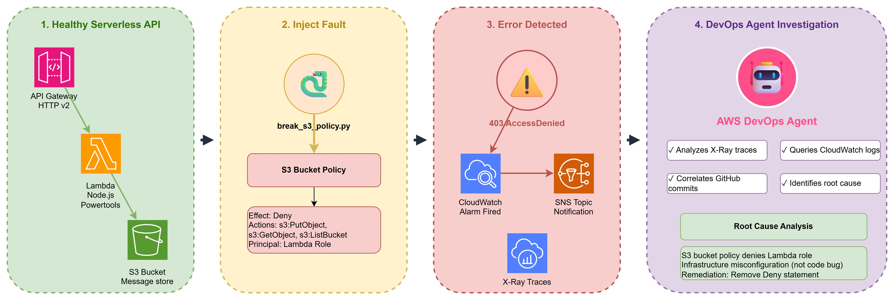
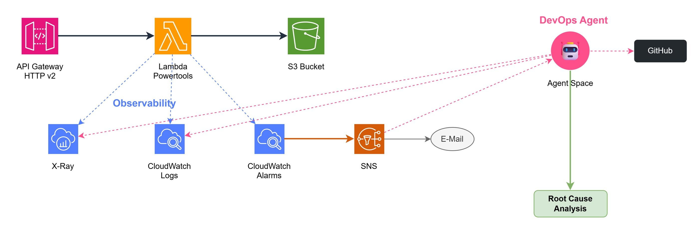

Autonomous AI agents that plan, build, secure, and heal your applications - around the clock, at machine speed.
Same team. 10x output.
Everything you'll see today is built around this idea - autonomous agents that amplify what your team can already do.
A new class of autonomous AI systems designed to handle complex, long-running tasks across the Software Development LifeCycle (SDLC) with minimal human intervention.
aws.amazon.com/ai/frontier-agents ↗Plans and executes multi-step tasks without per-step human input
Reaches a high-level goal by breaking it into subtasks
Manages multiple concurrent workstreams across repos and accounts
No bottleneck - runs as many parallel tracks as needed
Operates independently for hours or days
Maintains full context across the entire duration of a project
Translates natural language into structured requirements and technical designs. Implements features across dozens of repos in isolated sandboxes. Learns from your PR feedback over time.
app.kiro.dev/agent ↗Design Review - Validates architecture against your org security requirements before code is written
PR Scanning - Auto-scans for common vulnerabilities, OWASP Top 10, policy violations; remediation guidance directly in GitHub
Pen Testing - Autonomous multi-step attack chains on live apps; understands source code context
aws.amazon.com/security-agent ↗Autonomous Triage - Investigates incidents the moment an alert triggers, correlating data from CloudWatch and 3rd party tools
Root Cause Analysis (RCA) - Maps application topology to identify exactly where and why a failure occurred
Proactive Prevention - Analyzes historical incident patterns to recommend observability, infrastructure, deployment, and resilience improvements
aws.amazon.com/devops-agent ↗| Category | Providers | What Agent Gets |
|---|---|---|
| AWS Native | CloudWatch, X-Ray | Auto-discovered; no extra setup |
| Observability | Datadog, Dynatrace, New Relic | Metrics, traces, topology |
| CI/CD | GitHub, GitLab | Deployment history, commit correlation |
| Notifications | Slack, ServiceNow | Outbound RCA findings, bidirectional tickets |
| Custom | MCP Servers, Grafana, Prometheus | Extensible read-only tool access |
Agent reports investigation gaps if data is missing or permissions are insufficient


s3:PutObject,
s3:GetObject, and
s3:ListBucket
targeting the Lambda execution role ARN.FaultInjectionDeny in bucket policy
Switching to the AWS Console - we'll walk through the fault injection, alarm trigger, and Agent RCA in real time.
Scan to share your feedback